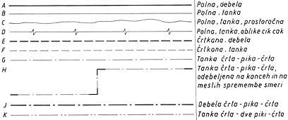

|
Pri izdelavi tehniène dokumentacije uporabljamo raziène vrste èrt. Posamezne vrste èrt se razlikujejo med deboj v debelini in v podobi ali naèinu risanja èrte.
Posamezne vrste èrt in njihova uporaba:  Slika 1:
Slika 2: 1. Vprašanja za usmerjanje pozornosti in usvajanje novih besed: 1. Koliko debelin èrte poznamo v tehniènem risanju? 2. Katero vrsto èrte uporabljamo za vidne robove? 3. Katero vrsto èrte uporabljamo za nevidne robove? 4. Katero vrsto èrte uporabljamo za kotirne in pomožne kotirne èrte? 5. Katero vrsto èrte uporabljamo za srednjice? 6. Naštej in opiši tri primere uporabe èrte B na sliki 2. 7. Opiši primer uporabe èrte C na sliki 2. 8. Opiši primer uporabe èrte G na sliki 2. 2. Zapiši od ene do pet kljuènih besed, ki povzemajo vsebino te uène enote. 3. Vprašanja za razmislek, ponavljanje in povezovanje z lastno izkušnjo: 4. Domaèa naloga: V enem do petih stavkih zapiši, kaj ti je v tej uèni enoti najbolj ostalo v spominu. |